Gumiszerviz Pécsen: 30+ gumimárka 24 órán belül
Gumiabroncs, felni és szerelés egy helyen, a Táncsics Mihály utcában, egész évben kedvező áron.
Szerelés és javítás saját gépeken
Gumiszerelés CORGHI szerelővas nélküli technikával és automata szerelőgépeken, kerékkiegyensúlyozás professzionális HOFMANN centrírozókon.
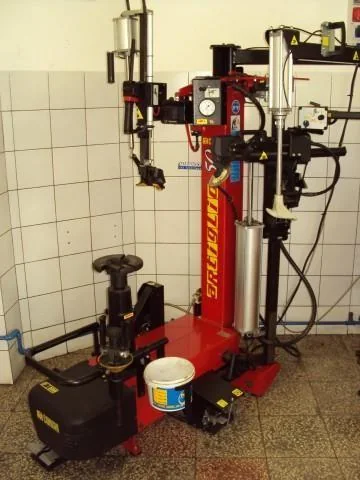
Kerékszerelés
Szerelővas nélkül, a nagyméretű és a defekttűrő kerekekhez is.
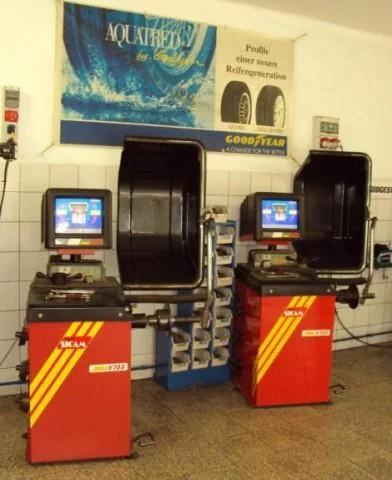
Kerékkiegyensúlyozás
Professzionális HOFMANN centrírozókon.
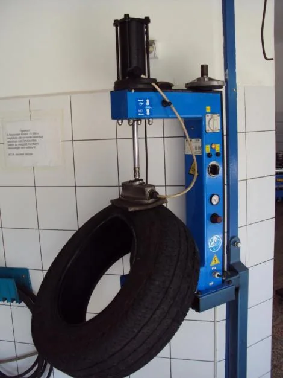
Oldalfal vulkanizálása
Több mint 60 éves tapasztalattal, automata termosütőkön.
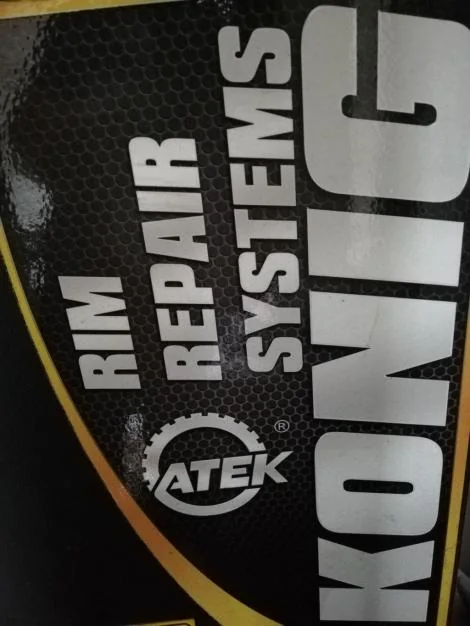
Könnyűfémfelni-javítás
A sérült könnyűfémfelnit is nálunk javíttathatja.
DefektjavításHa defektet kapott, hívjon, és megmondjuk, mikor jöhet.
KerékmosásKerékmosó és -tisztító berendezés a műhelyben.
FizetésBankkártyával is fizethet.
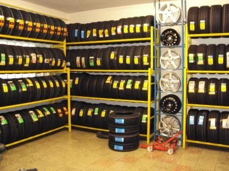
Gumiabroncs egész évben, nyári és téli akciókkal
Személyautóra és kis teherautóra. Több mint 30 gumimárka ajánlatai közül választhat 24 órán belül, például:
- Barum
- Semperit
- Continental
- Michelin
- Nexen
- Matador
- Kumho
- Nankang
Minden, ami a kerékhez kell
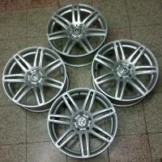
Felnik
Acél és könnyűfém keréktárcsák, újak és használtak.
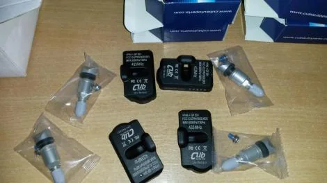
TPMS szelep
Ugyanúgy rendelhető, mint a gumi vagy a felni. 2014. november 1. óta csak abroncsnyomás-ellenőrzővel regisztrálhatók új személyautók.
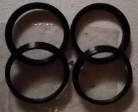
Tehermentesítő gyűrűk
Több mint 600 darabos készlet raktáron.
Kerékcsavarok
Kerékcsavarok is kaphatók a szaküzletben.
4,7
242 Google-vélemény alapján
- Van, aki évek óta itt veszi és szerelteti a gumijait: gyorsnak, kedvesnek és szolgálatkésznek írja a kiszolgálást.
- Más sérült kerékre kért gyorsan gumit: telefonon szóltak, amint megjött, a csere is gyors volt, az árakat korrektnek írja.
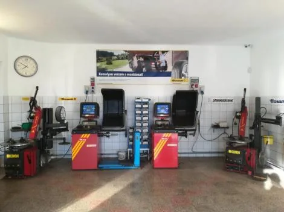
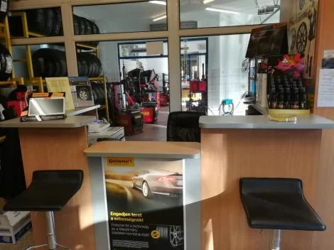
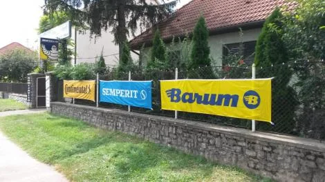
Inkább telefonálna?
Hétfőtől péntekig 8 és 16 óra között hívhat. A Baranya Megye Kártya felmutatói 500 Ft kedvezményt kapnak.
Gyakori kérdések
Hol találom a gumim méretét?
A gumi oldalfalán, például így: 205/55 R16. Az első szám a szélesség milliméterben, a második az oldalfal magassága a szélesség százalékában, az R utáni szám a felni átmérője collban.
Téli, nyári vagy négy évszakos gumi kell?
+15 Celsius fok felett a nyári gumiabroncs a biztonságos választás. +7 és +15 Celsius fok között a négy évszakos gumiabroncs ajánlott. +7 Celsius fok alatt a téli gumiabroncs sokkal nagyobb biztonságot nyújt.
Lehet időpontot kérni gumicserére?
Igen. Időpontot telefonon kérhet a 06 72 438 813-as számon, vagy az oldal időpontkérőjén.
Nagyméretű és defekttűrő kereket is szerelnek?
Igen. A CORGHI szerelőgépek a nagyméretű és defekttűrő kerekek szakszerű szereléséhez is valók, szerelővas nélkül dolgoznak.
Fizethetek bankkártyával?
Igen, bankkártyával is fizethet. A Baranya Megye Kártya felmutatói 500 Ft kedvezményt kapnak.
Mikor vannak nyitva?
Hétfőtől péntekig 8 és 16 óra között. Szombaton és vasárnap zárva.
Így talál meg minket
- Cím
- 7632 Pécs, Táncsics Mihály utca 40.
- Telefon
- 06 72 438 813
- toldygumiszerviz@gmail.com
- Nyitva
- Hétfő–péntek 8–16 óra
Szombat, vasárnap zárva